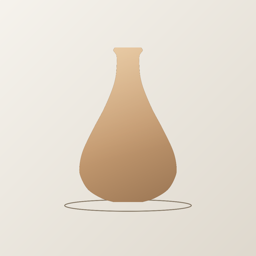

CeramistVoyez votre pièce avant de toucher la terre.
Dessinez un bol, un mug ou un vase du bout du doigt, voyez-le en 3D et apprenez à le tourner, étape par étape.
Sans publicité
- Des pièces qui tiennent au tournage : vous dessinez votre forme, vous savez si elle est réalisable et pourquoi, avant de centrer la motte.
- Progressez sans vous perdre : centrer, percer, monter, avec le geste expliqué et l'objectif de chaque étape.
- La boîte à outils de l'atelier : retrait des terres, contenance, poids de terre. Les calculs qu'on cherche toujours au mauvais moment.